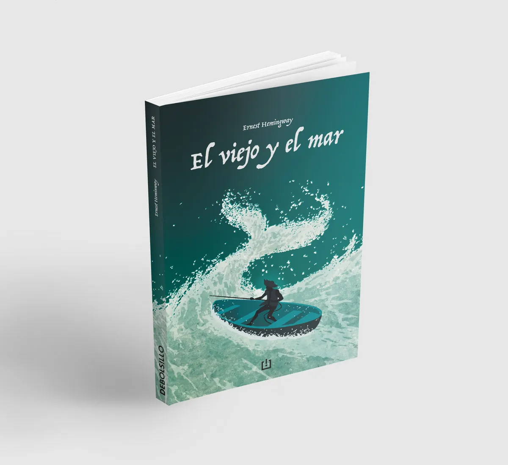
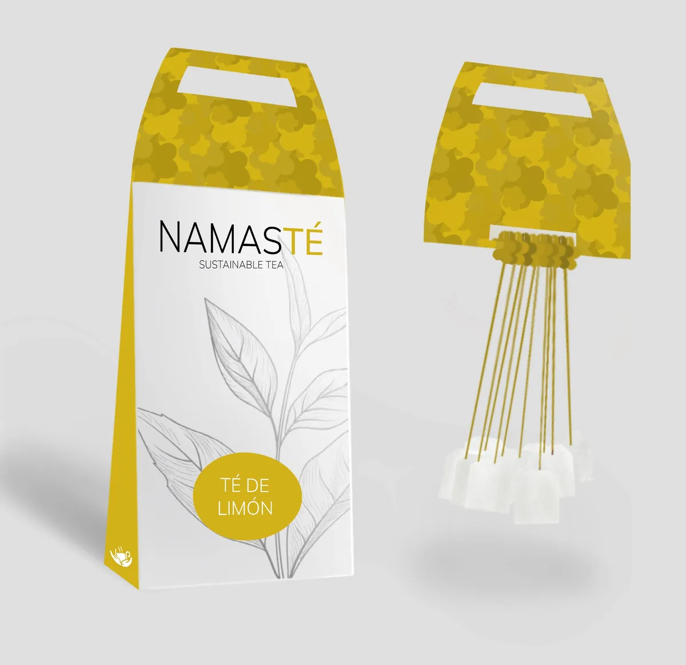
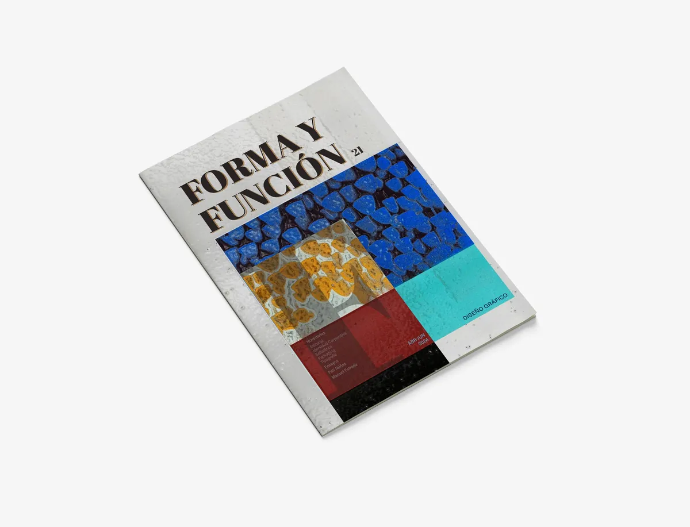
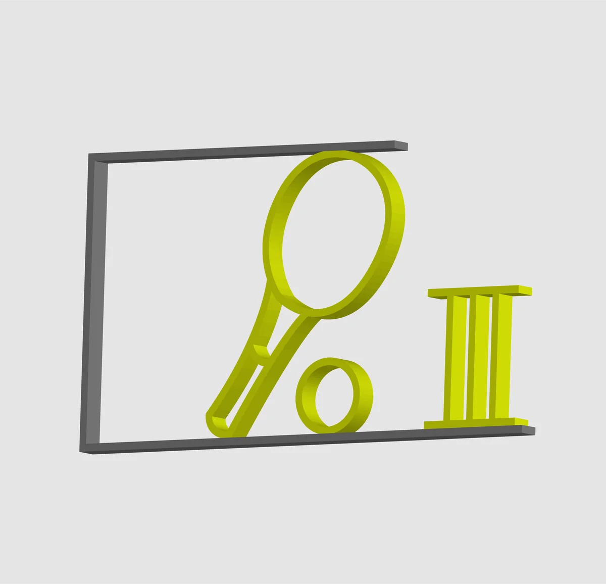
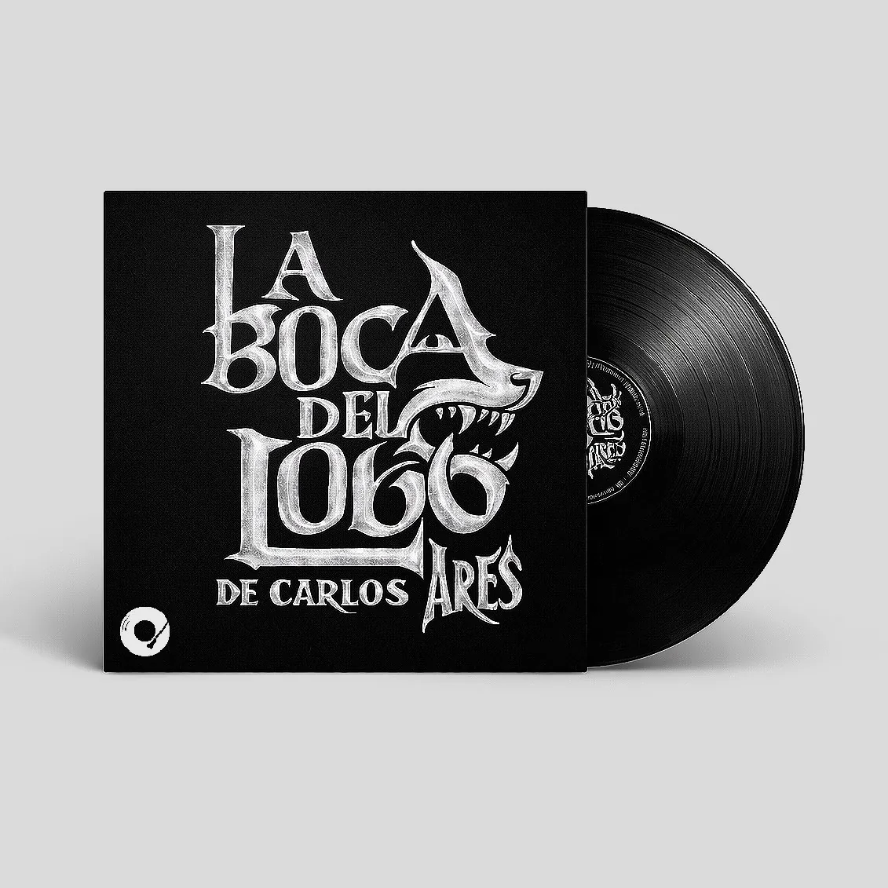
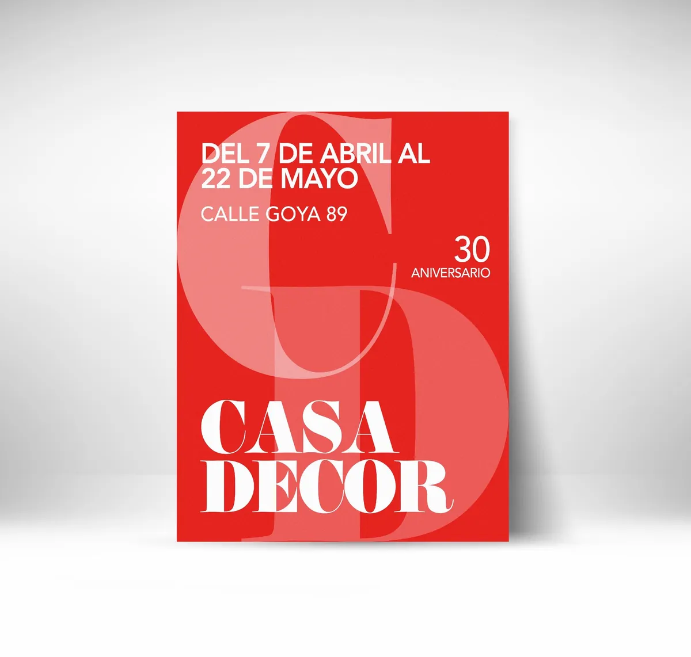
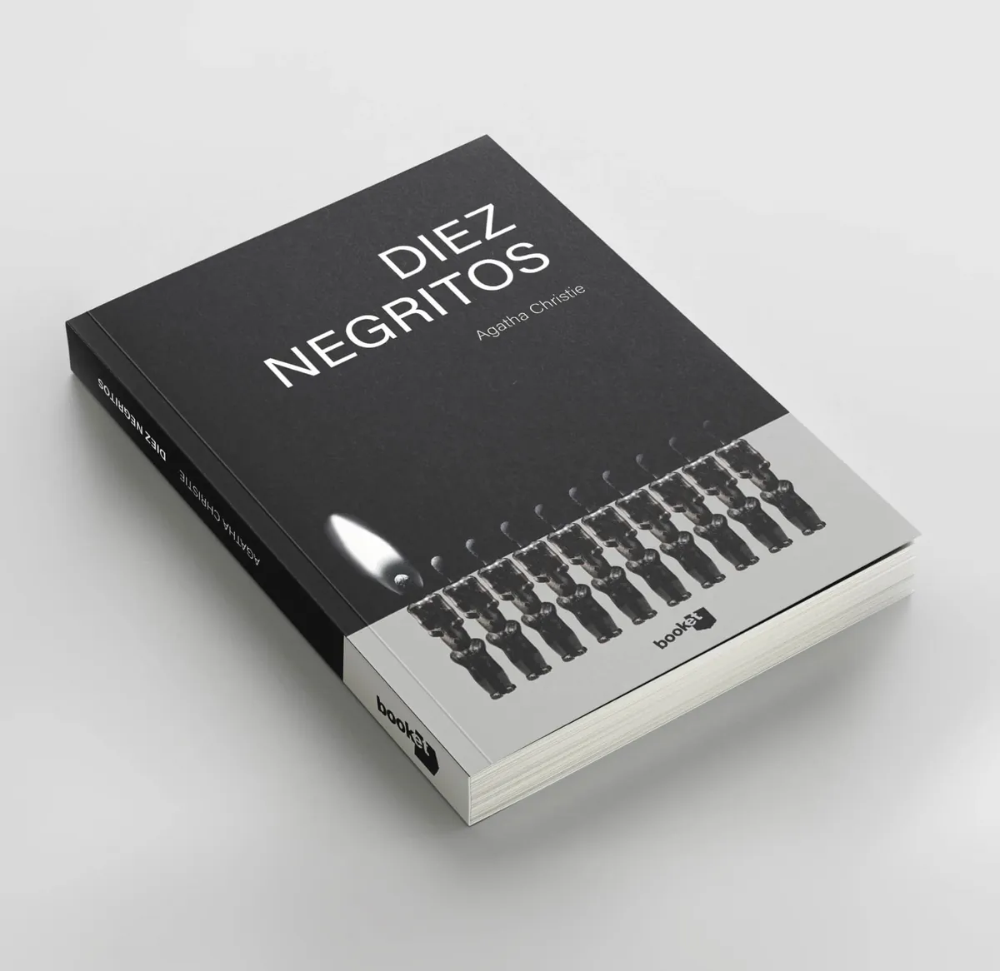
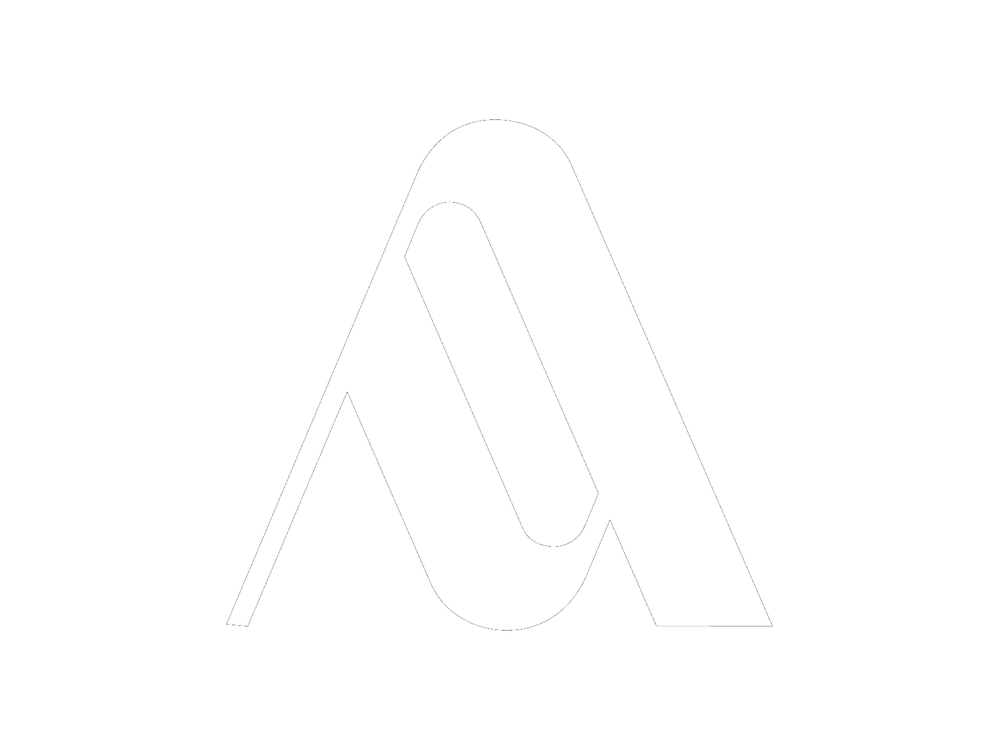
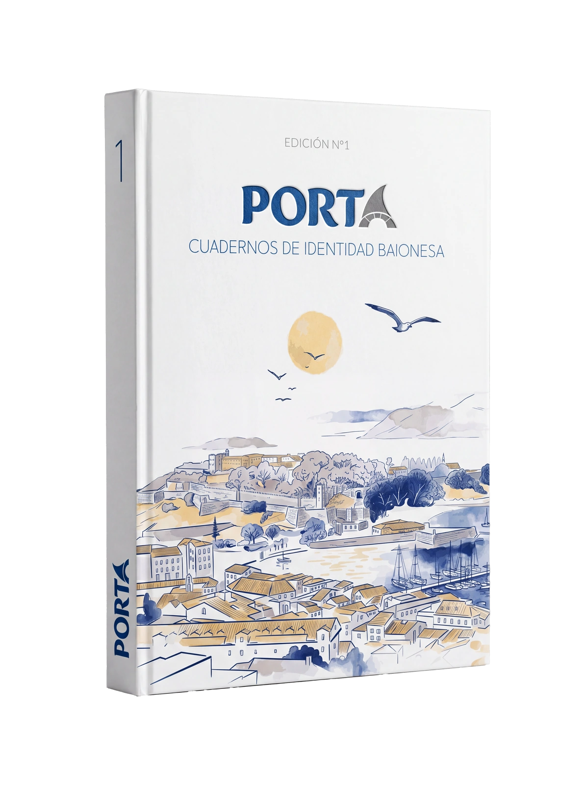

Nire ikuspegi sortzaile eta kontzeptualaren erakusgarri bat.








1. edizioa · Mook editoriala
Porta — Cuadernos de Identidad Baionesa
Baionako ondarea irakurketa pausatuko esperientzia bihurtzen duen mook editorial bat. Marka-identitatea, ilustrazioa, argazkilaritza eta diseinu editoriala hasieratik amaierara.
Ikusi proiektuaIdeia bat buruan baduzu, istorio bat kontatuko duen diseinu bat behar baduzu eta ikusten duzuna gustatzen bazaizu... hitz egin dezagun!
Bidali mezua